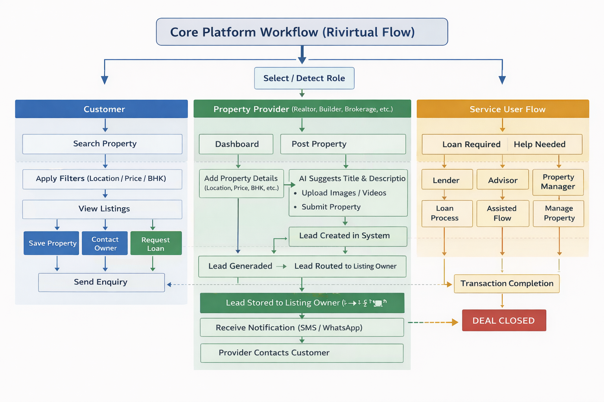

RiVirtual —
reimagining property.

A fragmented ecosystem at scale
RiVirtual served real estate professionals across the United States and Canada — but the platform had grown organically across ten major versions, leaving CRM workflows, property posting, and sign-in experiences inconsistent and difficult to scale.
Multiple user roles — realtors, customers, and internal teams — each navigated different paths through the same product. Legacy screens created friction in lead management, subscription handling, and property listings. Localization for two countries added another layer of complexity that the existing UI wasn't built to support.
The challenge wasn't a single screen redesign. It was unifying an entire real estate ecosystem while maintaining production stability, leading QA across releases, and shipping continuous improvements from Version 0.1 through Version 10.0.
Design and quality as one practice
I treated every release as a chapter in a larger product narrative — mapping user journeys first, then redesigning module by module with test plans written in parallel.
For the CRM revamp, I audited existing workflows across leads, contacts, customers, properties, marketing campaigns, sales dashboards, and tasks. Each module was redesigned with consistent information hierarchy, then validated through structured QA cycles before production sign-off.
Sign-in and onboarding received a dedicated overhaul — simplifying account type selection, magic link flows, and password recovery while introducing a clearer user overview experience. Behind the UI, I managed a team of ten testers, authored release test plans, and drove USA/Canada localization including AI-powered property title generation.
Wireframes, flows & device explorations
Early explorations across user journeys and multi-device presentations — click any image to enlarge.


Mapping journeys across roles
End-to-end flows for realtors, customers, and core platform workflows — click any diagram to enlarge.





A unified real estate platform
The redesigned RiVirtual ecosystem brought CRM, property posting, subscriptions, digital business cards, awards, and authentication into a cohesive experience — built to scale across markets and roles.
The CRM revamp delivered clear dashboards for leads, contacts, customers, properties, marketing campaigns, sales, and tasks — with streamlined forms like the Add Lead flow reducing steps for daily workflows. Sign-in and sign-up were rebuilt from the ground up with role-aware onboarding and a user overview that orients new users immediately.
Subscription management, property posting with AI-assisted titles, and multi-country localization were woven into the same design language — so real estate professionals could focus on clients and transactions, not navigating the tool.
Screens across the ecosystem
 Leads Dashboard
Leads Dashboard Contacts
Contacts Customers
Customers Properties
Properties Marketing Campaigns
Marketing Campaigns Sales Dashboard
Sales Dashboard Tasks
Tasks Add Lead Form
Add Lead Form Sign In Flow
Sign In Flow Sign Up Flow
Sign Up Flow User Overview
User OverviewDrag or scroll to explore · Click any screen to enlarge
Tap any screen to view full size
Ten versions, one continuous story
From Version 0.1 to Version 10.0, RiVirtual evolved into a production-grade platform serving real estate professionals across two countries — with design and QA operating as a single, accountable practice.
The CRM redesign unified daily workflows for lead management, sales tracking, and property operations. Sign-in and onboarding improvements reduced friction for new users across multiple account types. Localization and AI-assisted features extended the platform's reach without sacrificing consistency.
- Redesigned CRM, property posting, subscriptions & sign-in across 10 major releases
- Drove USA/Canada localization and AI-powered property title generation
- Managed end-to-end QA from discovery through production sign-off
- Led a team of 10+ testers with authored test plans for every release
Full case study document
Download the complete RiVirtual case study deck — covering CRM revamp, property posting, digital business cards, awards platform, and multi-role sign-in flows.
Download RiVirtual Case Study (.docx)